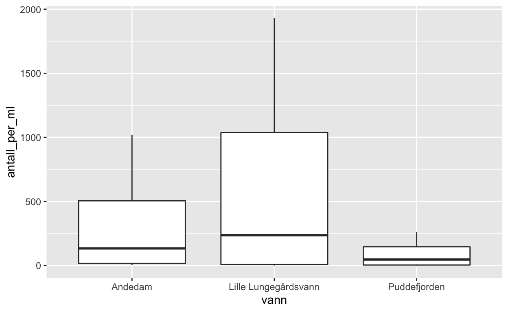
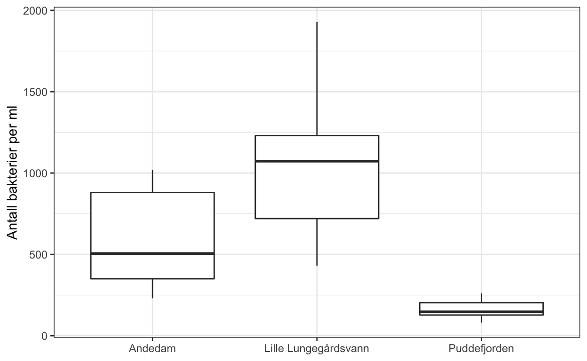

Data er organisert i tabeller.
Bra strategi å bruke csv eller txt format, fordi alle kan åpne disse filene uten å ha noe spesifik programvare (open source).
en tabell er organisert i kolloner og rad
Toppen av en kollone viser navn til variablene
radene viser en observasjon, for eksempel målingene på et individ av en bakterie, et tre, en bille.
read_delim()read_delim(file = "data/filename.csv", delim = ",")Nå prøver vi med et riktig dataset:
antall <- read_delim(file = "data/Antall_bakterier.csv", delim = ",")## Parsed with column specification:
## cols(
## vann = col_character(),
## bakterie = col_character(),
## antall_per_ml = col_double()
## )Hvis du vil vite mer om gjennomsnitt kan du se denne video: - link til video
Hvis du vil vite mer om variabilitet, standardfeil og avvik kan du se denne video: - Link til video
La oss prøve nå: hva betyr group_by og summarise bruk round() for å … kable: lage fin tabell.
antall %>%
group_by(vann, bakterie) %>%
summarise(gjennomsnitt = mean(antall_per_ml),
standardfeil = sd(antall_per_ml) / sqrt(n())) %>%
mutate(gjennomsnitt = round(gjennomsnitt, 2),
standardfeil = round(standardfeil, 2)) %>%
knitr::kable()## `summarise()` regrouping output by 'vann' (override with `.groups` argument)| vann | bakterie | gjennomsnitt | standardfeil |
|---|---|---|---|
| Andedam | Kim | 591.00 | 53.96 |
| Andedam | Koliforme | 17.67 | 1.94 |
| Lille Lungegårdsvann | Kim | 1031.36 | 85.15 |
| Lille Lungegårdsvann | Koliforme | 10.34 | 2.29 |
| Puddefjorden | Kim | 159.04 | 10.69 |
| Puddefjorden | Koliforme | 5.07 | 0.73 |
geom_boxplot()ggplot(data, aes(x = variable, y = response)) +
geom_boxplot()La oss prøve med et riktig eksempel:
ggplot(antall, aes(x = vann, y = antall_per_ml)) +
geom_boxplot()
La oss legge til noen ting for å lage plottet litt penere:
For å forandre tekste på aksen kan vi bruke labs()
facet_wrap() fordi vi har 2 bakterie typer. scales = …
```r
ggplot(antall, aes(x = vann, y = antall_per_ml)) +
geom_boxplot() +
labs(x = NULL, y = "Antall bakterier per ml") +
facet_wrap(~ bakterie, scales = "free_y") +
theme_bw()
Nå er de din tur! Lag en boksplot
ggplot(..., aes(x = , y = )) +
geom_boxplot()Hva slags data bruker vi? Tid, en variable, som her er celletall og standard feil
vekstHvordan lager man en vekstkurve
ggplot(data, aes(x = tid, y = variable)) +
geom_point() +
geom_line()La oss prøve med et riktig eksempel:
ggplot(vekst, aes(x = tid, y = celletall)) +
geom_point() +
geom_line() +
labs(x = "Tid i dager", y = "Celletall") +
theme_bw()Nå skal vi også legge til standardfeil for hver observasjon.
ggplot(vekst, aes(x = tid, y = celletall, ymin = celletall - standardfeil, ymax = celletall + standardfeil)) +
geom_point() +
geom_line() +
geom_errorbar() +
labs(x = "Tid i dager", y = "Celletall") +
theme_bw()Nå er de din tur! Lag en vekstkurve med
ggplot(, aes(x = , y = )) +Et ofte stillt spørsmål i økologi er om det er en forskjell mellom grupper. For eksempel er biller fra kog A større en biller fra skog B.
Hvordan tester man dette: Forklar veldig enkelt hva en ANOVA er
antall %>%
nest(data = -bakterie) %>%
mutate(model = map(data, ~lm(antall_per_ml ~ vann, data = .)),
result = map(model, tidy)) %>%
unnest(result)Interpretasjon av resultatene…